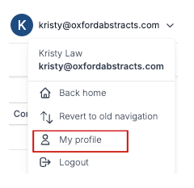
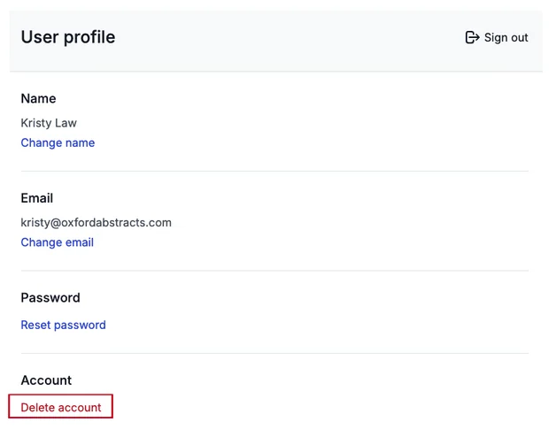
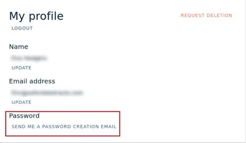

Updating your profile
Changing your name, email address or password is a simple process that can be done at any time, whilst logged in to the Oxford Abstracts app.#
To permanently delete your account follow the instructions on this article.
To access your profile navigate to the top right of your Oxford Abstracts dashboard, click on the icon that has your initial on and your email address.
Next select My Profile.

On the next screen you have the option to update your name, email address or password.
To update either of these, click either Change Name, Change Email or Reset Password and follow the instructions, clicking save when you are done making alterations.
You can also Delete your Oxford Abstracts account, on this page.
To find out what to do, take a look at our How to delete your account article.

Updating your profile if you have logged in with a third party account (e.g.Google / Linkedin)#
If you first log in to Oxford Abstracts with Google or Linkedin, you will have the option to request a password creation email. You may want to do this if you decide you want to disassociate your Oxford Abstracts account with your third party one.
After navigating to My profile (see above), click the link shown below and follow the instructions.

NB: If you create a new password , you will then be able to log in with your third party account (e.g.Linkedin / Google) AND just your email and new password.
If you update your email, you can no longer log in with your third party account.
If it says "email failed to save"#
Almost always this means the address you are changing to already has an Oxford Abstracts account. Two accounts cannot share one address, so the change is refused. Trying a different browser or turning off blockers will not help — the problem is not at your end.
Work out which of these applies:
- You already have an account on the new address. You now have two, and your work is split between them. There is no self-service way to merge them — contact support, say which account you want to keep, and your submissions can be moved across to it.
- You have lost access to the old mailbox — you have left an institution, say — and cannot sign in to change it yourself. Support can move you across; you will be asked to confirm both addresses.
- You mistyped the new address. If the change went through with a typo, you cannot correct it yourself, because you cannot receive mail at an address that does not exist. Support can put it right.
If you signed up with Google, LinkedIn or your institution's login#
An account created through a third-party sign-in has no password of its own, and you cannot change the email address on it — you will be told the change failed because you are an SSO user.
There is a way round it, and you can do it yourself:
- Go to your profile and set a password on the account.
- Sign out, then sign back in with your email address and that new password.
- Change the email address as normal.
Once the account has a password it is no longer tied to the third-party sign-in, so the change goes through. Note the trade-off: after changing the address you can no longer sign in with the third-party button, only with your email and password.
If you are an organiser and a reviewer is stuck on this, it is often quicker to reassign their reviews to the address they already use than to move them onto a new one.
Two things worth knowing before you ask:
- Submissions can be moved between accounts. Reviews are much harder. If you have completed reviews under the wrong address, say so early — the usual fix is to move the submissions rather than the reviews.
- If you are a submitter or reviewer for a specific conference, your event administrator can change the address held against your submission themselves, which is often quicker than going through us. See How do I contact the event administrator?
Didn't solve it? Ask our support team
No question is too small, and there's no charge for asking. Raise a ticket and someone who knows the software will pick it up.
Did this page solve it?
Thanks — this helps us fix it.